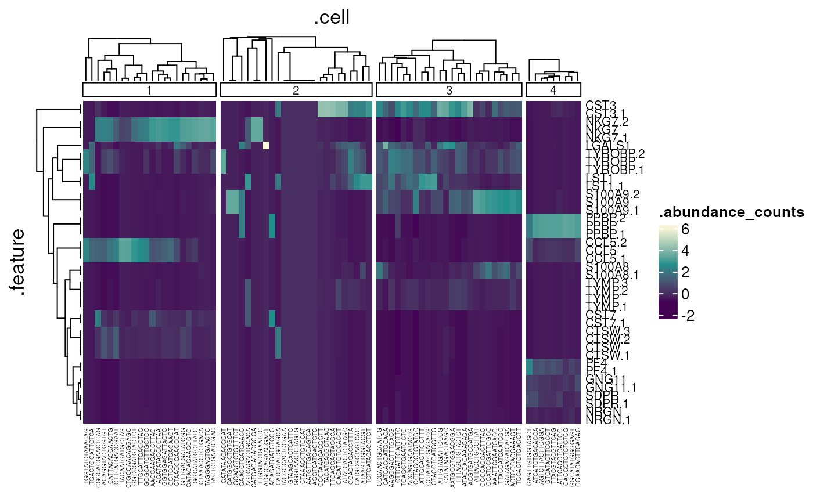
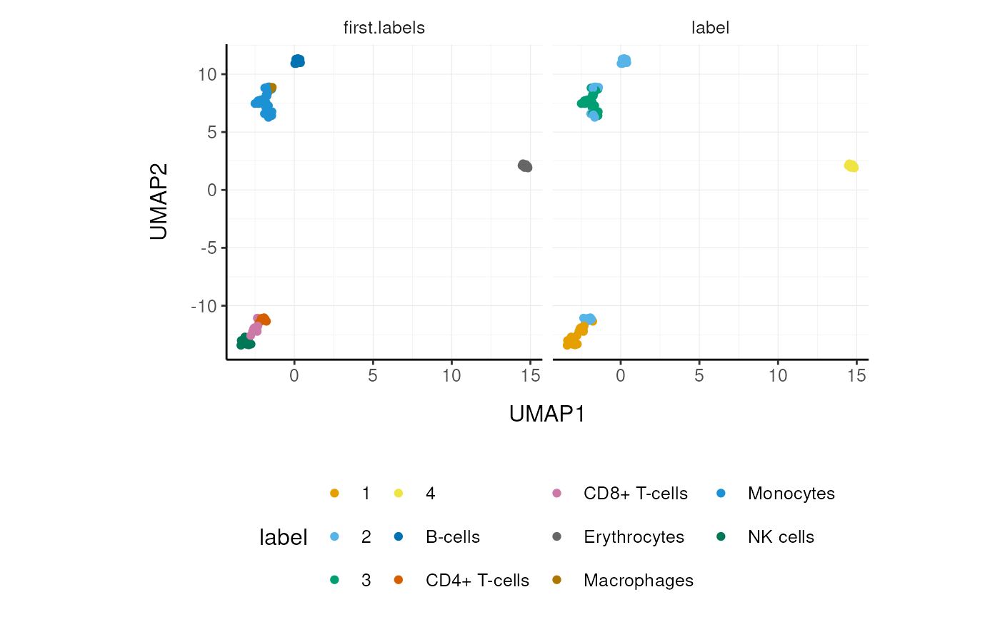
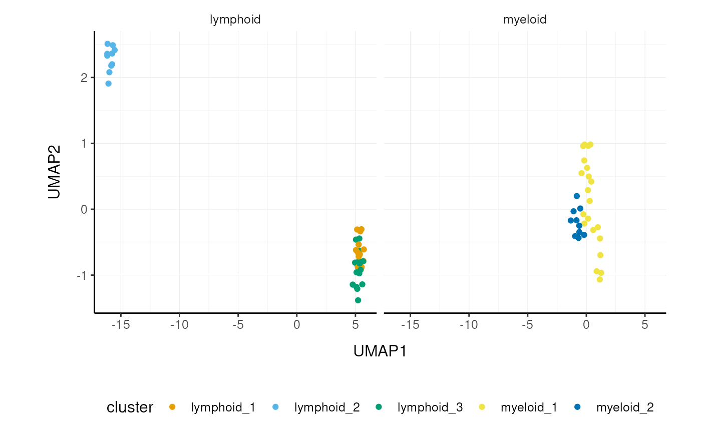

Overview of the tidySingleCellExperiment package
Stefano Mangiola
Source:vignettes/introduction.Rmd
introduction.RmdIntroduction
tidySingleCellExperiment provides a bridge between
Bioconductor single-cell packages (Amezquita et
al. 2019) and the tidyverse (Wickham et al. 2019). It enables viewing the
Bioconductor SingleCellExperiment
object as a tidyverse tibble, and provides
SingleCellExperiment-compatible dplyr, tidyr, ggplot2 and
plotly
functions (see Table @ref(tab:table)). This allows users to get the best
of both Bioconductor and tidyverse worlds.
All functions compatible with
SingleCellExperiments |
After all, a tidySingleCellExperiment is a SingleCellExperiment, just better! |
| tidyverse | |
dplyr |
All tibble-compatible functions (e.g., select()) |
tidyr |
All tibble-compatible functions (e.g., pivot_longer()) |
ggplot2 |
Plotting with ggplot()
|
plotly |
Plotting with plot_ly()
|
| Utilities | |
as_tibble() |
Convert cell-wise information to a tbl_df
|
join_features() |
Add feature-wise information; returns a tbl_df
|
aggregate_cells() |
Aggregate feature abundances as pseudobulks; returns a SummarizedExperiment
|
Installation
if (!requireNamespace("BiocManager", quietly=TRUE))
install.packages("BiocManager")
BiocManager::install("tidySingleCellExperiment")Load libraries used in this vignette.
# Bioconductor single-cell packages
library(scran)
library(scater)
library(igraph)
library(celldex)
library(SingleR)
library(SingleCellSignalR)
# Tidyverse-compatible packages
library(purrr)
library(GGally)
library(tidyHeatmap)
# Both
library(tidySingleCellExperiment)
# Other
library(Matrix)
library(dittoSeq)Data representation of tidySingleCellExperiment
This is a SingleCellExperiment object but it is
evaluated as a tibble. So it is compatible both with
SingleCellExperiment and tidyverse.
data(pbmc_small, package="tidySingleCellExperiment")
pbmc_small_tidy <- pbmc_smallIt looks like a tibble…
pbmc_small_tidy## # A SingleCellExperiment-tibble abstraction: 80 × 17
## # Features=230 | Cells=80 | Assays=counts, logcounts
## .cell orig.ident nCount_RNA nFeature_RNA RNA_snn_res.0.8 letter.idents groups
## <chr> <fct> <dbl> <int> <fct> <fct> <chr>
## 1 ATGC… SeuratPro… 70 47 0 A g2
## 2 CATG… SeuratPro… 85 52 0 A g1
## 3 GAAC… SeuratPro… 87 50 1 B g2
## 4 TGAC… SeuratPro… 127 56 0 A g2
## 5 AGTC… SeuratPro… 173 53 0 A g2
## 6 TCTG… SeuratPro… 70 48 0 A g1
## 7 TGGT… SeuratPro… 64 36 0 A g1
## 8 GCAG… SeuratPro… 72 45 0 A g1
## 9 GATA… SeuratPro… 52 36 0 A g1
## 10 AATG… SeuratPro… 100 41 0 A g1
## # ℹ 70 more rows
## # ℹ 10 more variables: RNA_snn_res.1 <fct>, file <chr>, ident <fct>,
## # PC_1 <dbl>, PC_2 <dbl>, PC_3 <dbl>, PC_4 <dbl>, PC_5 <dbl>, tSNE_1 <dbl>,
## # tSNE_2 <dbl>…but it is a SingleCellExperiment after
all!
counts(pbmc_small_tidy)[1:5, 1:4]## 5 x 4 sparse Matrix of class "dgCMatrix"
## ATGCCAGAACGACT CATGGCCTGTGCAT GAACCTGATGAACC TGACTGGATTCTCA
## MS4A1 . . . .
## CD79B 1 . . .
## CD79A . . . .
## HLA-DRA . 1 . .
## TCL1A . . . .The SingleCellExperiment object’s tibble visualisation
can be turned off, or back on at any time.
# Turn off the tibble visualisation
options("restore_SingleCellExperiment_show" = TRUE)
pbmc_small_tidy## class: SingleCellExperiment
## dim: 230 80
## metadata(0):
## assays(2): counts logcounts
## rownames(230): MS4A1 CD79B ... SPON2 S100B
## rowData names(5): vst.mean vst.variance vst.variance.expected
## vst.variance.standardized vst.variable
## colnames(80): ATGCCAGAACGACT CATGGCCTGTGCAT ... GGAACACTTCAGAC
## CTTGATTGATCTTC
## colData names(9): orig.ident nCount_RNA ... file ident
# Turn on the tibble visualisation
options("restore_SingleCellExperiment_show" = FALSE)Annotation polishing
We may have a column that contains the directory each run was taken
from, such as the “file” column in pbmc_small_tidy.
pbmc_small_tidy$file[1:5]## [1] "../data/sample2/outs/filtered_feature_bc_matrix/"
## [2] "../data/sample1/outs/filtered_feature_bc_matrix/"
## [3] "../data/sample2/outs/filtered_feature_bc_matrix/"
## [4] "../data/sample2/outs/filtered_feature_bc_matrix/"
## [5] "../data/sample2/outs/filtered_feature_bc_matrix/"We may want to extract the run/sample name out of it into a separate
column. The tidyverse function extract() can be
used to convert a character column into multiple columns using regular
expression groups.
# Create sample column
pbmc_small_polished <-
pbmc_small_tidy %>%
extract(file, "sample", "../data/([a-z0-9]+)/outs.+", remove=FALSE)
# Reorder to have sample column up front
pbmc_small_polished %>%
select(sample, everything())## # A SingleCellExperiment-tibble abstraction: 80 × 18
## # Features=230 | Cells=80 | Assays=counts, logcounts
## .cell sample orig.ident nCount_RNA nFeature_RNA RNA_snn_res.0.8 letter.idents
## <chr> <chr> <fct> <dbl> <int> <fct> <fct>
## 1 ATGC… sampl… SeuratPro… 70 47 0 A
## 2 CATG… sampl… SeuratPro… 85 52 0 A
## 3 GAAC… sampl… SeuratPro… 87 50 1 B
## 4 TGAC… sampl… SeuratPro… 127 56 0 A
## 5 AGTC… sampl… SeuratPro… 173 53 0 A
## 6 TCTG… sampl… SeuratPro… 70 48 0 A
## 7 TGGT… sampl… SeuratPro… 64 36 0 A
## 8 GCAG… sampl… SeuratPro… 72 45 0 A
## 9 GATA… sampl… SeuratPro… 52 36 0 A
## 10 AATG… sampl… SeuratPro… 100 41 0 A
## # ℹ 70 more rows
## # ℹ 11 more variables: groups <chr>, RNA_snn_res.1 <fct>, file <chr>,
## # ident <fct>, PC_1 <dbl>, PC_2 <dbl>, PC_3 <dbl>, PC_4 <dbl>, PC_5 <dbl>,
## # tSNE_1 <dbl>, tSNE_2 <dbl>Preliminary plots
Set colours and theme for plots.
# Use colourblind-friendly colours
friendly_cols <- dittoSeq::dittoColors()
# Set theme
custom_theme <- list(
scale_fill_manual(values=friendly_cols),
scale_color_manual(values=friendly_cols),
theme_bw() + theme(
aspect.ratio=1,
legend.position="bottom",
axis.line=element_line(),
text=element_text(size=12),
panel.border=element_blank(),
strip.background=element_blank(),
panel.grid.major=element_line(linewidth=0.2),
panel.grid.minor=element_line(linewidth=0.1),
axis.title.x=element_text(margin=margin(t=10, r=10, b=10, l=10)),
axis.title.y=element_text(margin=margin(t=10, r=10, b=10, l=10))))We can treat pbmc_small_polished as a
tibble for plotting.
Here we plot number of features per cell.
pbmc_small_polished %>%
ggplot(aes(nFeature_RNA, fill=groups)) +
geom_histogram() +
custom_theme
Here we plot total features per cell.
pbmc_small_polished %>%
ggplot(aes(groups, nCount_RNA, fill=groups)) +
geom_boxplot(outlier.shape=NA) +
geom_jitter(width=0.1) +
custom_theme
Here we plot abundance of two features for each group.
pbmc_small_polished %>%
join_features(features=c("HLA-DRA", "LYZ")) %>%
ggplot(aes(groups, .abundance_counts + 1, fill=groups)) +
geom_boxplot(outlier.shape=NA) +
geom_jitter(aes(size=nCount_RNA), alpha=0.5, width=0.2) +
scale_y_log10() +
custom_themePreprocessing
We can also treat pbmc_small_polished as a
SingleCellExperiment object and proceed with data
processing with Bioconductor packages, such as scran (Lun, Bach, and Marioni 2016) and scater
(McCarthy et al. 2017).
# Identify variable genes with scran
variable_genes <-
pbmc_small_polished %>%
modelGeneVar() %>%
getTopHVGs(prop=0.1)
# Perform PCA with scater
pbmc_small_pca <-
pbmc_small_polished %>%
runPCA(subset_row=variable_genes)
pbmc_small_pca## # A SingleCellExperiment-tibble abstraction: 80 × 18
## # Features=230 | Cells=80 | Assays=counts, logcounts
## .cell orig.ident nCount_RNA nFeature_RNA RNA_snn_res.0.8 letter.idents groups
## <chr> <fct> <dbl> <int> <fct> <fct> <chr>
## 1 ATGC… SeuratPro… 70 47 0 A g2
## 2 CATG… SeuratPro… 85 52 0 A g1
## 3 GAAC… SeuratPro… 87 50 1 B g2
## 4 TGAC… SeuratPro… 127 56 0 A g2
## 5 AGTC… SeuratPro… 173 53 0 A g2
## 6 TCTG… SeuratPro… 70 48 0 A g1
## 7 TGGT… SeuratPro… 64 36 0 A g1
## 8 GCAG… SeuratPro… 72 45 0 A g1
## 9 GATA… SeuratPro… 52 36 0 A g1
## 10 AATG… SeuratPro… 100 41 0 A g1
## # ℹ 70 more rows
## # ℹ 11 more variables: RNA_snn_res.1 <fct>, file <chr>, sample <chr>,
## # ident <fct>, PC1 <dbl>, PC2 <dbl>, PC3 <dbl>, PC4 <dbl>, PC5 <dbl>,
## # tSNE_1 <dbl>, tSNE_2 <dbl>If a tidyverse-compatible package is not included in the
tidySingleCellExperiment collection, we can use
as_tibble() to permanently convert a
tidySingleCellExperiment into a tibble.
# Create pairs plot with 'GGally'
pbmc_small_pca %>%
as_tibble() %>%
select(contains("PC"), everything()) %>%
GGally::ggpairs(columns=1:5, aes(colour=groups)) +
custom_theme
Clustering
We can proceed with cluster identification with scran.
pbmc_small_cluster <- pbmc_small_pca
# Assign clusters to the 'colLabels'
# of the 'SingleCellExperiment' object
colLabels(pbmc_small_cluster) <-
pbmc_small_pca %>%
buildSNNGraph(use.dimred="PCA") %>%
igraph::cluster_walktrap() %$%
membership %>%
as.factor()
# Reorder columns
pbmc_small_cluster %>%
select(label, everything())## # A SingleCellExperiment-tibble abstraction: 80 × 19
## # Features=230 | Cells=80 | Assays=counts, logcounts
## .cell label orig.ident nCount_RNA nFeature_RNA RNA_snn_res.0.8 letter.idents
## <chr> <fct> <fct> <dbl> <int> <fct> <fct>
## 1 ATGCC… 2 SeuratPro… 70 47 0 A
## 2 CATGG… 2 SeuratPro… 85 52 0 A
## 3 GAACC… 2 SeuratPro… 87 50 1 B
## 4 TGACT… 1 SeuratPro… 127 56 0 A
## 5 AGTCA… 2 SeuratPro… 173 53 0 A
## 6 TCTGA… 2 SeuratPro… 70 48 0 A
## 7 TGGTA… 1 SeuratPro… 64 36 0 A
## 8 GCAGC… 2 SeuratPro… 72 45 0 A
## 9 GATAT… 2 SeuratPro… 52 36 0 A
## 10 AATGT… 2 SeuratPro… 100 41 0 A
## # ℹ 70 more rows
## # ℹ 12 more variables: groups <chr>, RNA_snn_res.1 <fct>, file <chr>,
## # sample <chr>, ident <fct>, PC1 <dbl>, PC2 <dbl>, PC3 <dbl>, PC4 <dbl>,
## # PC5 <dbl>, tSNE_1 <dbl>, tSNE_2 <dbl>And interrogate the output as if it was a regular
tibble.
## # A tibble: 8 × 3
## groups label n
## <chr> <fct> <int>
## 1 g1 1 12
## 2 g1 2 14
## 3 g1 3 14
## 4 g1 4 4
## 5 g2 1 10
## 6 g2 2 11
## 7 g2 3 10
## 8 g2 4 5We can identify and visualise cluster markers combining
SingleCellExperiment, tidyverse functions and
tidyHeatmap
(Mangiola and Papenfuss 2020).
# Identify top 10 markers per cluster
marker_genes <-
pbmc_small_cluster %>%
findMarkers(groups=pbmc_small_cluster$label) %>%
as.list() %>%
map(~ .x %>%
head(10) %>%
rownames()) %>%
unlist()
# Plot heatmap
pbmc_small_cluster %>%
join_features(features=marker_genes) %>%
group_by(label) %>%
heatmap(
.row=.feature, .column=.cell,
.value=.abundance_counts, scale="column")
Reduce dimensions
We can calculate the first 3 UMAP dimensions using scater.
And we can plot the result in 3D using plotly.
pbmc_small_UMAP %>%
plot_ly(
x=~`UMAP1`,
y=~`UMAP2`,
z=~`UMAP3`,
color=~label,
colors=friendly_cols[1:4])Cell type prediction
We can infer cell type identities using SingleR (Aran et al. 2019) and manipulate the output using tidyverse.
# Get cell type reference data
blueprint <- celldex::BlueprintEncodeData()
# Infer cell identities
cell_type_df <-
logcounts(pbmc_small_UMAP) %>%
Matrix::Matrix(sparse = TRUE) %>%
SingleR::SingleR(
ref=blueprint,
labels=blueprint$label.main,
method="single") %>%
as.data.frame() %>%
as_tibble(rownames="cell") %>%
select(cell, first.labels)
# Join UMAP and cell type info
data(cell_type_df)
pbmc_small_cell_type <-
pbmc_small_UMAP %>%
left_join(cell_type_df, by="cell")
# Reorder columns
pbmc_small_cell_type %>%
select(cell, first.labels, everything())## # A SingleCellExperiment-tibble abstraction: 80 × 23
## # Features=230 | Cells=80 | Assays=counts, logcounts
## cell first.labels orig.ident nCount_RNA nFeature_RNA RNA_snn_res.0.8
## <chr> <chr> <fct> <dbl> <int> <fct>
## 1 ATGCCAGAACGA… CD4+ T-cells SeuratPro… 70 47 0
## 2 CATGGCCTGTGC… CD8+ T-cells SeuratPro… 85 52 0
## 3 GAACCTGATGAA… CD8+ T-cells SeuratPro… 87 50 1
## 4 TGACTGGATTCT… CD4+ T-cells SeuratPro… 127 56 0
## 5 AGTCAGACTGCA… CD4+ T-cells SeuratPro… 173 53 0
## 6 TCTGATACACGT… CD4+ T-cells SeuratPro… 70 48 0
## 7 TGGTATCTAAAC… CD4+ T-cells SeuratPro… 64 36 0
## 8 GCAGCTCTGTTT… CD4+ T-cells SeuratPro… 72 45 0
## 9 GATATAACACGC… CD4+ T-cells SeuratPro… 52 36 0
## 10 AATGTTGACAGT… CD4+ T-cells SeuratPro… 100 41 0
## # ℹ 70 more rows
## # ℹ 17 more variables: letter.idents <fct>, groups <chr>, RNA_snn_res.1 <fct>,
## # file <chr>, sample <chr>, ident <fct>, label <fct>, PC1 <dbl>, PC2 <dbl>,
## # PC3 <dbl>, PC4 <dbl>, PC5 <dbl>, tSNE_1 <dbl>, tSNE_2 <dbl>, UMAP1 <dbl>,
## # UMAP2 <dbl>, UMAP3 <dbl>We can easily summarise the results. For example, we can see how cell type classification overlaps with cluster classification.
# Count number of cells for each cell type per cluster
pbmc_small_cell_type %>%
count(label, first.labels)## # A tibble: 11 × 3
## label first.labels n
## <fct> <chr> <int>
## 1 1 CD4+ T-cells 2
## 2 1 CD8+ T-cells 8
## 3 1 NK cells 12
## 4 2 B-cells 10
## 5 2 CD4+ T-cells 6
## 6 2 CD8+ T-cells 2
## 7 2 Macrophages 1
## 8 2 Monocytes 6
## 9 3 Macrophages 1
## 10 3 Monocytes 23
## 11 4 Erythrocytes 9We can easily reshape the data for building information-rich faceted plots.
pbmc_small_cell_type %>%
# Reshape and add classifier column
pivot_longer(
cols=c(label, first.labels),
names_to="classifier", values_to="label") %>%
# UMAP plots for cell type and cluster
ggplot(aes(UMAP1, UMAP2, color=label)) +
facet_wrap(~classifier) +
geom_point() +
custom_theme
We can easily plot gene correlation per cell category, adding multi-layer annotations.
pbmc_small_cell_type %>%
# Add some mitochondrial abundance values
mutate(mitochondrial=rnorm(dplyr::n())) %>%
# Plot correlation
join_features(features=c("CST3", "LYZ"), shape="wide") %>%
ggplot(aes(CST3+1, LYZ+1, color=groups, size=mitochondrial)) +
facet_wrap(~first.labels, scales="free") +
geom_point() +
scale_x_log10() +
scale_y_log10() +
custom_theme
Nested analyses
A powerful tool we can use with tidySingleCellExperiment
is tidyverse’s nest(). We can easily perform
independent analyses on subsets of the dataset. First, we classify cell
types into lymphoid and myeloid, and then nest() based on
the new classification.
pbmc_small_nested <-
pbmc_small_cell_type %>%
filter(first.labels != "Erythrocytes") %>%
mutate(cell_class=if_else(
first.labels %in% c("Macrophages", "Monocytes"),
true="myeloid", false="lymphoid")) %>%
nest(data=-cell_class)
pbmc_small_nested## # A tibble: 2 × 2
## cell_class data
## <chr> <list>
## 1 lymphoid <SnglCllE[,40]>
## 2 myeloid <SnglCllE[,31]>Now we can independently for the lymphoid and myeloid subsets (i) find variable features, (ii) reduce dimensions, and (iii) cluster using both tidyverse and SingleCellExperiment seamlessly.
pbmc_small_nested_reanalysed <-
pbmc_small_nested %>%
mutate(data=map(data, ~ {
# feature selection
variable_genes <- .x %>%
modelGeneVar() %>%
getTopHVGs(prop=0.3)
# dimension reduction
.x <- .x %>%
runPCA(subset_row=variable_genes) %>%
runUMAP(ncomponents=3)
# clustering
colLabels(.x) <- .x %>%
buildSNNGraph(use.dimred="PCA") %>%
cluster_walktrap() %$%
membership %>%
as.factor()
return(.x)
}))
pbmc_small_nested_reanalysed## # A tibble: 2 × 2
## cell_class data
## <chr> <list>
## 1 lymphoid <SnglCllE[,40]>
## 2 myeloid <SnglCllE[,31]>We can then unnest() and plot the new
classification.
pbmc_small_nested_reanalysed %>%
# Convert to 'tibble', else 'SingleCellExperiment'
# drops reduced dimensions when unifying data sets.
mutate(data=map(data, ~as_tibble(.x))) %>%
unnest(data) %>%
# Define unique clusters
unite("cluster", c(cell_class, label), remove=FALSE) %>%
# Plotting
ggplot(aes(UMAP1, UMAP2, color=cluster)) +
facet_wrap(~cell_class) +
geom_point() +
custom_theme
We can perform a large number of functional analyses on data subsets.
For example, we can identify intra-sample cell-cell interactions using
SingleCellSignalR (Cabello-Aguilar
et al. 2020), and then compare whether interactions are stronger
or weaker across conditions. The code below demonstrates how this
analysis could be performed. It won’t work with this small example
dataset as we have just two samples (one for each condition). But some
example output is shown below and you can imagine how you can use
tidyverse on the output to perform t-tests and visualisation.
pbmc_small_nested_interactions <-
pbmc_small_nested_reanalysed %>%
# Unnest based on cell category
unnest(data) %>%
# Create unambiguous clusters
mutate(integrated_clusters=first.labels %>% as.factor() %>% as.integer()) %>%
# Nest based on sample
nest(data=-sample) %>%
mutate(interactions=map(data, ~ {
# Produce variables. Yuck!
cluster <- colData(.x)$integrated_clusters
data <- data.frame(assay(.x) %>% as.matrix())
# Ligand/Receptor analysis using 'SingleCellSignalR'
data %>%
cell_signaling(genes=rownames(data), cluster=cluster) %>%
inter_network(data=data, signal=., genes=rownames(data), cluster=cluster) %$%
`individual-networks` %>%
map_dfr(~ bind_rows(as_tibble(.x)))
}))
pbmc_small_nested_interactions %>%
select(-data) %>%
unnest(interactions)If the dataset was not so small, and interactions could be identified, you would see something like below.
data(pbmc_small_nested_interactions)
pbmc_small_nested_interactions## # A tibble: 100 × 9
## sample ligand receptor ligand.name receptor.name origin destination
## <chr> <chr> <chr> <chr> <chr> <chr> <chr>
## 1 sample1 cluster 1.PTMA cluster… PTMA VIPR1 clust… cluster 2
## 2 sample1 cluster 1.B2M cluster… B2M KLRD1 clust… cluster 2
## 3 sample1 cluster 1.IL16 cluster… IL16 CD4 clust… cluster 2
## 4 sample1 cluster 1.HLA-B cluster… HLA-B KLRD1 clust… cluster 2
## 5 sample1 cluster 1.CALM1 cluster… CALM1 VIPR1 clust… cluster 2
## 6 sample1 cluster 1.HLA-E cluster… HLA-E KLRD1 clust… cluster 2
## 7 sample1 cluster 1.GNAS cluster… GNAS VIPR1 clust… cluster 2
## 8 sample1 cluster 1.B2M cluster… B2M HFE clust… cluster 2
## 9 sample1 cluster 1.PTMA cluster… PTMA VIPR1 clust… cluster 3
## 10 sample1 cluster 1.CALM1 cluster… CALM1 VIPR1 clust… cluster 3
## # ℹ 90 more rows
## # ℹ 2 more variables: interaction.type <chr>, LRscore <dbl>Aggregating cells
Sometimes, it is necessary to aggregate the gene-transcript abundance from a group of cells into a single value. For example, when comparing groups of cells across different samples with fixed-effect models.
In tidySingleCellExperiment, cell aggregation can be
achieved using aggregate_cells(), which will return an
object of class SummarizedExperiment.
pbmc_small_tidy %>%
aggregate_cells(groups, assays="counts")## class: SummarizedExperiment
## dim: 230 2
## metadata(0):
## assays(1): counts
## rownames(230): ACAP1 ACRBP ... ZNF330 ZNF76
## rowData names(0):
## colnames(2): g1 g2
## colData names(4): .aggregated_cells groups orig.ident fileSession Info
## R Under development (unstable) (2023-11-22 r85609)
## Platform: x86_64-pc-linux-gnu
## Running under: Ubuntu 22.04.3 LTS
##
## Matrix products: default
## BLAS: /usr/lib/x86_64-linux-gnu/openblas-pthread/libblas.so.3
## LAPACK: /usr/lib/x86_64-linux-gnu/openblas-pthread/libopenblasp-r0.3.20.so; LAPACK version 3.10.0
##
## locale:
## [1] LC_CTYPE=en_US.UTF-8 LC_NUMERIC=C
## [3] LC_TIME=en_US.UTF-8 LC_COLLATE=en_US.UTF-8
## [5] LC_MONETARY=en_US.UTF-8 LC_MESSAGES=en_US.UTF-8
## [7] LC_PAPER=en_US.UTF-8 LC_NAME=C
## [9] LC_ADDRESS=C LC_TELEPHONE=C
## [11] LC_MEASUREMENT=en_US.UTF-8 LC_IDENTIFICATION=C
##
## time zone: UTC
## tzcode source: system (glibc)
##
## attached base packages:
## [1] stats4 stats graphics grDevices utils datasets methods
## [8] base
##
## other attached packages:
## [1] dittoSeq_1.15.3 Matrix_1.6-4
## [3] ttservice_0.4.0 tidyr_1.3.0
## [5] dplyr_1.1.4 tidySingleCellExperiment_1.13.2
## [7] tidyHeatmap_1.8.1 GGally_2.2.0
## [9] purrr_1.0.2 SingleCellSignalR_1.15.0
## [11] SingleR_2.5.0 celldex_1.13.0
## [13] igraph_1.5.1 scater_1.31.1
## [15] ggplot2_3.4.4 scran_1.31.0
## [17] scuttle_1.13.0 SingleCellExperiment_1.25.0
## [19] SummarizedExperiment_1.33.1 Biobase_2.63.0
## [21] GenomicRanges_1.55.1 GenomeInfoDb_1.39.1
## [23] IRanges_2.37.0 S4Vectors_0.41.2
## [25] BiocGenerics_0.49.1 MatrixGenerics_1.15.0
## [27] matrixStats_1.1.0 knitr_1.45
## [29] BiocStyle_2.31.0
##
## loaded via a namespace (and not attached):
## [1] splines_4.4.0 later_1.3.2
## [3] bitops_1.0-7 filelock_1.0.2
## [5] tibble_3.2.1 lifecycle_1.0.4
## [7] doParallel_1.0.17 edgeR_4.1.2
## [9] rprojroot_2.0.4 lattice_0.22-5
## [11] MASS_7.3-60.1 dendextend_1.17.1
## [13] magrittr_2.0.3 plotly_4.10.3
## [15] limma_3.59.1 sass_0.4.8
## [17] rmarkdown_2.25 jquerylib_0.1.4
## [19] yaml_2.3.7 metapod_1.11.0
## [21] httpuv_1.6.13 cowplot_1.1.1
## [23] DBI_1.1.3 RColorBrewer_1.1-3
## [25] abind_1.4-5 zlibbioc_1.49.0
## [27] Rtsne_0.17 RCurl_1.98-1.13
## [29] rappdirs_0.3.3 circlize_0.4.15
## [31] GenomeInfoDbData_1.2.11 ggrepel_0.9.4
## [33] irlba_2.3.5.1 pheatmap_1.0.12
## [35] dqrng_0.3.2 pkgdown_2.0.7
## [37] DelayedMatrixStats_1.25.1 codetools_0.2-19
## [39] DelayedArray_0.29.0 tidyselect_1.2.0
## [41] shape_1.4.6 farver_2.1.1
## [43] ScaledMatrix_1.11.0 viridis_0.6.4
## [45] BiocFileCache_2.11.1 jsonlite_1.8.8
## [47] GetoptLong_1.0.5 BiocNeighbors_1.21.1
## [49] multtest_2.59.0 ellipsis_0.3.2
## [51] ggridges_0.5.4 survival_3.5-7
## [53] iterators_1.0.14 systemfonts_1.0.5
## [55] foreach_1.5.2 tools_4.4.0
## [57] ragg_1.2.6 Rcpp_1.0.11
## [59] glue_1.6.2 gridExtra_2.3
## [61] SparseArray_1.3.1 xfun_0.41
## [63] withr_2.5.2 BiocManager_1.30.22
## [65] fastmap_1.1.1 bluster_1.13.0
## [67] fansi_1.0.6 caTools_1.18.2
## [69] digest_0.6.33 rsvd_1.0.5
## [71] R6_2.5.1 mime_0.12
## [73] textshaping_0.3.7 colorspace_2.1-0
## [75] Cairo_1.6-2 gtools_3.9.5
## [77] RSQLite_2.3.4 utf8_1.2.4
## [79] generics_0.1.3 data.table_1.14.10
## [81] FNN_1.1.3.2 htmlwidgets_1.6.4
## [83] httr_1.4.7 S4Arrays_1.3.1
## [85] ggstats_0.5.1 uwot_0.1.16
## [87] pkgconfig_2.0.3 gtable_0.3.4
## [89] blob_1.2.4 ComplexHeatmap_2.19.0
## [91] XVector_0.43.0 htmltools_0.5.7
## [93] bookdown_0.37 clue_0.3-65
## [95] scales_1.3.0 png_0.1-8
## [97] rjson_0.2.21 curl_5.2.0
## [99] cachem_1.0.8 GlobalOptions_0.1.2
## [101] stringr_1.5.1 BiocVersion_3.19.1
## [103] KernSmooth_2.23-22 parallel_4.4.0
## [105] vipor_0.4.5 AnnotationDbi_1.65.2
## [107] desc_1.4.2 pillar_1.9.0
## [109] grid_4.4.0 vctrs_0.6.5
## [111] gplots_3.1.3 promises_1.2.1
## [113] BiocSingular_1.19.0 dbplyr_2.4.0
## [115] beachmat_2.19.0 xtable_1.8-4
## [117] cluster_2.1.6 beeswarm_0.4.0
## [119] evaluate_0.23 cli_3.6.1
## [121] locfit_1.5-9.8 compiler_4.4.0
## [123] rlang_1.1.2 crayon_1.5.2
## [125] labeling_0.4.3 plyr_1.8.9
## [127] fs_1.6.3 ggbeeswarm_0.7.2
## [129] stringi_1.8.2 viridisLite_0.4.2
## [131] BiocParallel_1.37.0 munsell_0.5.0
## [133] Biostrings_2.71.1 lazyeval_0.2.2
## [135] ExperimentHub_2.11.0 patchwork_1.1.3
## [137] sparseMatrixStats_1.15.0 bit64_4.0.5
## [139] KEGGREST_1.43.0 statmod_1.5.0
## [141] shiny_1.8.0 highr_0.10
## [143] interactiveDisplayBase_1.41.0 AnnotationHub_3.11.0
## [145] memoise_2.0.1 bslib_0.6.1
## [147] bit_4.0.5